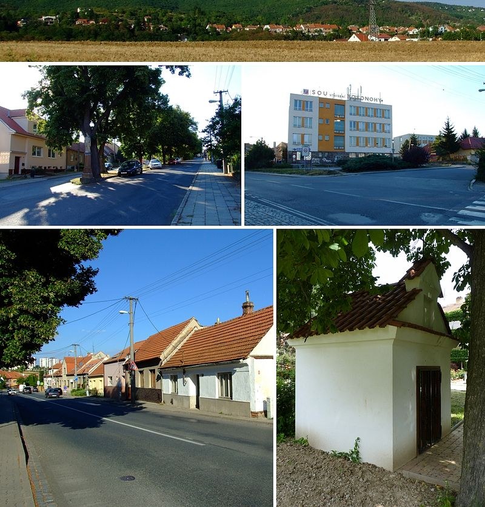

Brno-Bosonohy
Brno-Bosonohy je městská část na jihozápadě statutárního města Brna.
Je tvořena městskou čtvrtí Bosonohy (německy Parfuß) a nepatrnou částí
sousedního katastrálního území Kohoutovice.
Bosonohy byly původně samostatnou obcí, která byla k Brnu připojena v roce 1971.
Její území má rozlohu 7,15 km².
Samosprávná městská část vznikla 24. listopadu 1990. Žije zde přibližně 2500 obyvatel.

Video průvodce - youtube
Zpět
Ostaní stránky:
- Brno - Královo Pole
- Brno - Žebětín
- Brno - Útěchov
- Brno - Chrlice
- Brno - Ivanovice
- Brno - Starý Lískovec
- Brno -Jundrov